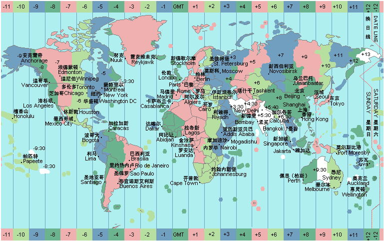
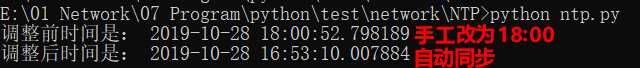
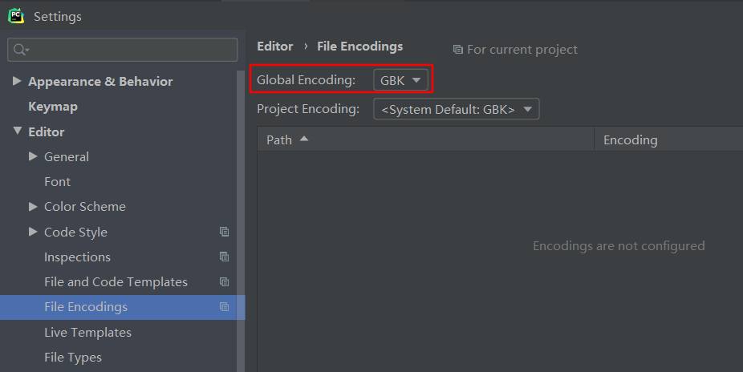

原文连接:https://www.cnblogs.com/singvis/p/11768713.html
1. 概念
1.1 基本概念
时间，对于我们来说很重要，什么时候做什么？什么时候发生什么？没有时间的概念，生活就乱了。
在日常的运维当中，我们更关注告警的时间：什么时候发生、什么事故、影响范围、什么时候解决，都是有关联性的，所以时间的准确性是非常非常的重要。
你可能会好奇，时间到底是怎么来的呢？作为网工的你，可能你也不是很清楚吧？
你是不是只知道NTP？
标准参考时钟是什么？
时间戳'1573401600' , 能看出这个是什么时间点？
原子钟和GPS是作为标准参考时钟，全世界都以它为时钟源。
从你手表或电脑的时间同步到时钟源，中间可能经过多层级，每一层叫做 'stratum' ,只是精确度不一样而已。当然，我们肯定不是直接和原子钟同步，我们可以选择最近的主时钟源，比如中国/香港等等。
或者，你们公司内网可能是同步到内网的主时钟服务器，然后同步到互联网去。
说完了时钟源，那么得有一个时间标准吧，全世界每个国家时区都不一样，不能用一个时间给全地球用吧。
GMT(Greenwich Mean Time)： 格林尼治标准时间，以太阳横穿格林尼治子午线（本初子午线）来计算，现不推荐；
UTC( Universal Time Coordinated )：协调世界时间 ， 以原子时秒长为基础 ，接近GMT，作为世界标准时间。
为了统一世界的时间，1884年的国际经度会议规规定将全球划分为24个时区（东、西各12个时区）。规定英国（格林尼治天文台旧址）为零时区（GMT+00），东1-12区，西1-12区，中国北京处于东8区（GMT+08）

举个栗子：
UTC 时间：2019-11-10 16:00:00
北京时间：2019-11-11 00:00:00 (UTC + 8个小时)时钟源和标准时间说完了，那么接下来讲下时间同步通信机制。
网络时间协议NTP（Network Time Protocol）是TCP/IP协议族里面的一个应用层协议。
NTP用于在一系列分布式时间服务器与客户端之间同步时钟。
NTP的实现基于IP和UDP，NTP报文通过UDP传输，端口号是123。
1.2 版本演进
| 版本 | 时间 | 协议号 | 描述 |
|---|---|---|---|
| NTPv1 | 1988年6月 | RFC 1059 | 首次提出了完整的NTP规则以及算法，但是NTPv1不支持认证和控制消息 |
| NTPv2 | 1989年9月 | RFC 1119 | 支持认证和控制消息 |
| NTPv3 | 1992年3月 | RFC 1305 | 正式引入了校正原则，并改进了时钟选择和时钟过滤算法。NTPv3目前应用较为广泛,仅支持IPv4 |
| NTPv4 | 2010年6月 | RFC 5905 | 支持IPv4和IPv6，安全性更高。 |
2. 示例演示
2.1 前提条件
准备好三方库：ntplib
安装方法：
pip3 install -i [https://pypi.douban.com/simple/](https://pypi.douban.com/simple/) ntplib环境：Windows + Python3
2.2 完整代码
#!/usr/bin/env python3
#-*- coding:UTF-8 -*-
#欢迎关注微信公众号：点滴技术
#这里有靠谱、有价值、免费分享
import ntplib
import os,datetime
hosts = ['0.cn.pool.ntp.org','1.cn.pool.ntp.org','2.cn.pool.ntp.org','3.cn.pool.ntp.org']
def ntp_client():
#创建实例，NTPClient()是一个类
t = ntplib.NTPClient()
for host in hosts:
try:
#ntp server可以填写主机和域名，建议用域名
#缺省端口为ntp， 版本为2， 超时为5s
#作用：查询 NTP 服务器，并返回对象
r = t.request(host , port='ntp', version=4, timeout=5)
if r:
break
except Exception as e:
pass
#显示的是时间戳
t = r.tx_time
#使用datetime模块,格式化：x年x月x日 时:分:秒.毫秒
_date,_time = str(datetime.datetime.fromtimestamp(t))[:22].split(' ')
print("调整前时间是：", datetime.datetime.now())
os.system('date {} && time {}'.format(_date, _time))
print("调整后时间是：", datetime.datetime.now())
if __name__ == '__main__':
#适用于Windows
ntp_client()在windowns环境下，通过'管理员'运行'cmd',进入到对应的文件路径，运行结果如下所示：

备注：截至目前，尚未找到能够在pycharm直接运行代码，报错 “客户端没有所需的特权”，后续研究 'ctypes' 看能否实现。
2.3 其他问题
关于pycharm运行'os.system()' 出现中文乱码问题，需要改下编码问题，设置如下：

3. 参考信息：
如果喜欢的我的文章，欢迎关注我的公众号：点滴技术，扫码关注，不定期分享